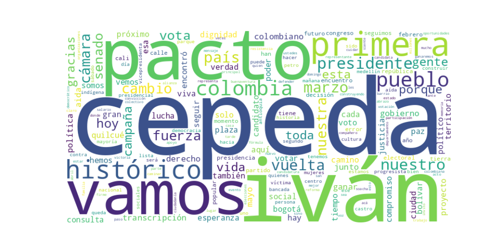

Seguidores: 458,362
Reporte de Análisis Político y de Comunicación: Candidato Iván Cepeda Castro
1. Perfil de Comunicación: El candidato Iván Cepeda emplea un estilo de comunicación predominantemente informal y cercano, orientado a conectar emocionalmente con el electorado. Su lenguaje es popular y accesible, evitando tecnicismos para priorizar un discurso comprensible por la base social. Apela frecuentemente a la colectividad ("el pueblo", "la gente") y utiliza referencias culturales (música, deporte) para generar identificación. Aunque en declaraciones formales o de denuncia puede adoptar un tono más solemne y propositivo, predomina un enfoque de diálogo directo, casi conversacional, que busca borrar distancias entre el candidato y el ciudadano común.
2. Temas Principales: * Continuidad del "Cambio" / Proyecto Progresista: El eje central de su discurso es la defensa y profundización del gobierno del presidente Gustavo Petro. Presenta su candidatura como "el segundo gobierno progresista" y la "continuidad del cambio". Ejemplo: "Hoy inicia el segundo gobierno progresista... para profundizar los cambios". * Defensa de la Vida, la Paz y los Derechos Humanos: Un tema estructurante, que enlaza la lucha histórica de las víctimas, la defensa del acuerdo de paz y la protección del medio ambiente. Ejemplo: "Vamos a seguir el legado de cuidar la vida y defender la dignidad de nuestro pueblo" y su constante referencia a "los nadie" y las víctimas del conflicto. * Justicia Social y Lucha contra la Desigualdad: Aborda la necesidad de reformas estructurales, destacando logros como el salario vital, la reforma agraria y el acceso a la educación. Critica la corrupción y la concentración de la riqueza. Ejemplo: "Si erradicamos la desigualdad en Colombia, seremos una nación más próspera... una verdadera potencia mundial de la vida". * Poder Popular y Democracia Participativa: Enfatiza un modelo de gobierno desde y para las bases ("mandar obedeciendo"). Critica las élites tradicionales y promueve la movilización ciudadana y la defensa del voto. Ejemplo: "Gobernaré cerca de la gente. Mandaré obedeciendo y escucharé dialogando". * Inclusión y Reconocimiento de la Diversidad: Da un lugar central a las comunidades históricamente excluidas. Su fórmula con Aída Quilcué simboliza este compromiso con los pueblos indígenas, afrodescendientes, mujeres, comunidad LGBTIQ+ y jóvenes. Ejemplo: "Es el tiempo de las mujeres, es el tiempo de la madre tierra y los pueblos".
3. Tono y Sentimiento Dominante: El tono general es esperanzador y de resistencia propositiva. Combina un mensaje de optimismo sobre el futuro ("el cambio continúa", "vamos a ganar") con una narrativa de lucha y resiliencia frente a la persecución política y los "intentos de sabotaje" por parte del establecimiento. Es un discurso que busca movilizar, convocando a la acción colectiva desde la esperanza, pero sin ocultar una crítica firme hacia sus opositores, a quienes acusa de utilizar "campañas sucias", "trampas" y "artimañas".
4. Palabras Clave de Poder: * El cambio / La continuidad del cambio * El pueblo / La gente * Poder de la verdad * Primera vuelta (como objetivo estratégico y consigna: "ganar en primera") * Vida / Cuidar la vida / Potencia mundial de la vida * Dignidad * Justicia social * Pacto Histórico (como sujeto colectivo) * Segundo gobierno progresista * Mandar obedeciendo
5. Conclusión Estratégica: La estrategia de comunicación de Iván Cepeda está diseñada para consolidar y movilizar la base electoral del Pacto Histórico y el gobierno de Gustavo Petro, presentándose como el garante natural de su continuidad. Su discurso apela directamente a las clases populares, a los jóvenes, a las víctimas del conflicto y a las comunidades étnicas y territoriales, sectores que se sienten representados en su narrativa de inclusión y justicia histórica. Busca evocar un sentido de pertenencia a un proyecto colectivo en marcha ("el cambio"), enfrentado a una oposición que describe como temerosa y antidemocrática. Más que conquistar nuevos votantes indecisos del centro, su objetivo principal parece ser asegurar una participación masiva y entusiasta de su coalición, convertir la elección en un plebiscito sobre el primer gobierno de Petro y alcanzar una victoria contundente en primera vuelta que interprete como una legitimación popular irreversible de su proyecto.
1. Resumen del Patrón de Éxito: Los videos de mayor engagement del candidato construyen una narrativa épica de resiliencia victoriosa. Combinan un relato de asedio y persecución política (el “nosotros” acorralado) con imágenes y mensajes de apoyo masivo, poder popular y victoria inevitable. La fórmula mezcla la emoción del underdog que se sobrepone (indignación, convicción) con la certeza triunfalista de un movimiento imparable. Es una comunicación basada en la movilización emocional de la base, no en la persuasión racional del indeciso.
2. Tácticas de Comunicación Clave: * Narrativa de Persecución y Resiliencia: Establece un "ellos" (la ultraderecha, las élites, el CNE) que utiliza "maniobras tramposas", "persecución" y "violencia" para intentar "detener" al movimiento. Él se posiciona como el líder "curtido" que "sigue de pie", transformando cada ataque en una prueba de fortaleza y una razón para redoblar el apoyo. * Culto a la Movilización y la Plaza Llena: La métrica suprema de legitimidad y poder no son los argumentos, sino la presencia física masiva ("plazas llenas", "multitudes"). Cada video menciona o muestra estos actos como prueba irrefutable del respaldo popular y del "poder de la verdad". * Fusión Identitaria con el Proyecto en Curso: Evita presentarse como una novedad o una ruptura. Se vincula directamente a la figura de Gustavo Petro y al "gobierno progresista" existente ("El cambio no se detiene. Lo que empezó con Gustavo Petro continúa con él"). Esto busca capitalizar la lealtad al proyecto y presentar su candidatura como su continuación natural y lógica. * Llamado a la Acción Dual y Concreto: Siempre hay un llamado a la movilización física ("los llamo a que se movilice") y un llamado al voto específico y urgente, con fechas claves (8 de marzo, 31 de mayo). La acción no es abstracta; es salir a la plaza y votar en primera vuelta por listas específicas (Pacto Histórico).
3. Temas de Mayor Resonancia: 1. La "Persecución" al Pacto Histórico: El intento de vetos e impugnaciones genera indignación y cohesiona a la base. 2. La Fuerza y Unidad del Pueblo Movilizado: Las imágenes y descripciones de apoyo multitudinario en regiones (Antioquia, Cali, Tumaco, Medellín) son el núcleo del contenido exitoso. 3. La Continuidad del "Cambio": La idea de ser el heredero y garante de un proceso en marcha ("segundo gobierno progresista"). 4. La Victoria Inminente e Inevitable: La afirmación repetida y segura de ganar en "primera vuelta".
4. Perfil de la Audiencia Implícita: El lenguaje y los temas apuntan directamente a la base electoral más leal y movilizada del Pacto Histórico. No se explica el proyecto; se da por sentado que la audiencia ya lo conoce y lo apoya ("nuestras tesis", "nuestro gobierno"). El tono es de arenga a los convencidos, de consolidación del grupo ante las amenazas externas. Se busca reforzar la identidad grupal, activar la movilización y asegurar la votación disciplinada de la coalición, más que expandir hacia electores neutros.
5. Conclusión Estratégica: La clave fundamental de su poder discursivo es la transformación de la vulnerabilidad en fuerza narrativa. Mientras un político tradicional ocultaría o minimizaría los ataques legales y las controversias, este candidato los coloca en el centro de su relato, utilizándolos como prueba de la "amenaza" que el establishment representa y, por tanto, de la necesidad histórica de su movimiento. Su discurso no promete un futuro idílico; promete victoria en una batalla épica que ya está librando, donde el propio acto de votar por él se convierte en un acto de resistencia y afirmación colectiva. Es una comunicación de trinchera, no de salón.

Caption: Esta campaña la hacemos con ARTE Austeridad Respeto Transparencia Ética Itagüí y Antioquia están con Iván Cepeda presidente y el Pacto Histórico para Cámara y Senado. Vamos a ser mayorías legislativas este 8 marzo y ganaremos la presidencia en primera vuelta este 31 de mayo. #CepedaPresidente #IvánEsElMan Arista del mural: @miguel.mons Autores de la canción: @monojark1 @laurasofia_nc
Likes: 14,057 | Comentarios: 302 | Reproducciones: 91,685
Ver en InstagramCaption: Somos la principal fuerza política del país. Intentaron detenernos. El pueblo respondió. Vamos a ganar, pero con principios. 🇨🇴✊
Likes: 9,597 | Comentarios: 346 | Reproducciones: 63,190
Ver en InstagramCaption: NO VAN A LOGRAR DETENER AL PACTO HISTÓRICO NI NUESTRA CANDIDATURA
Likes: 31,431 | Comentarios: 1,160 | Reproducciones: 220,044
Ver en Instagram